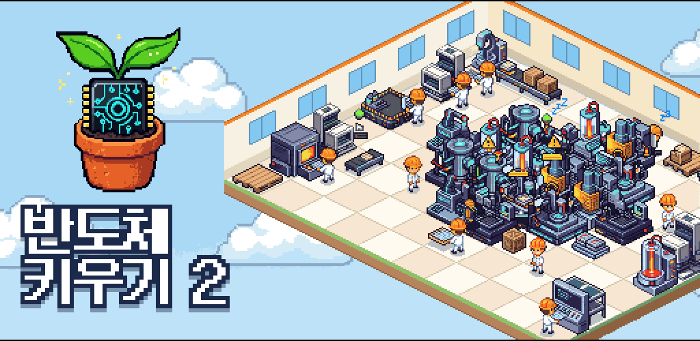
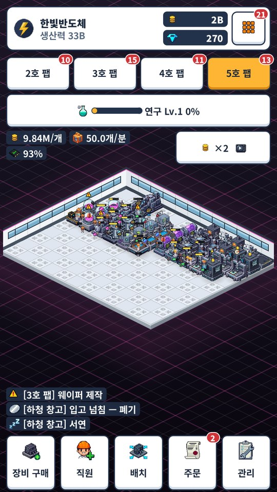
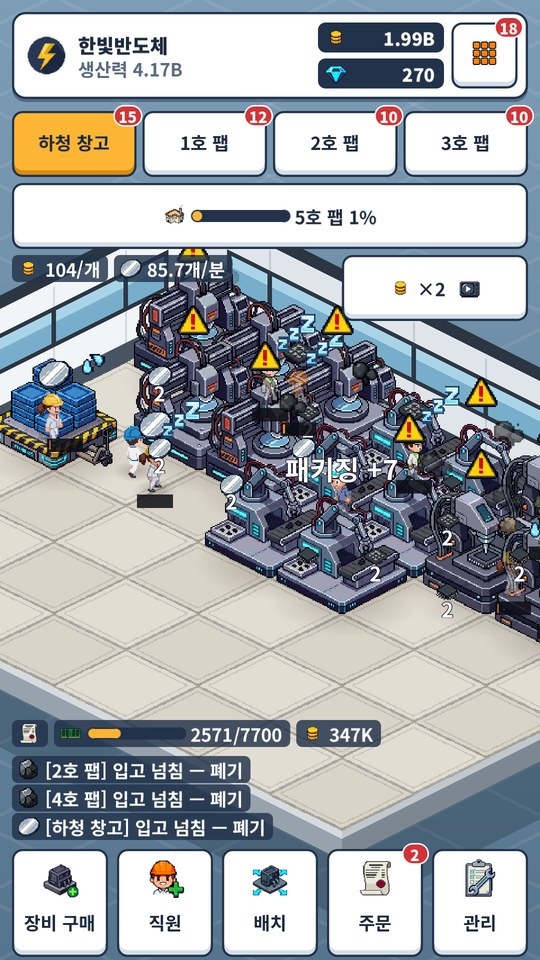
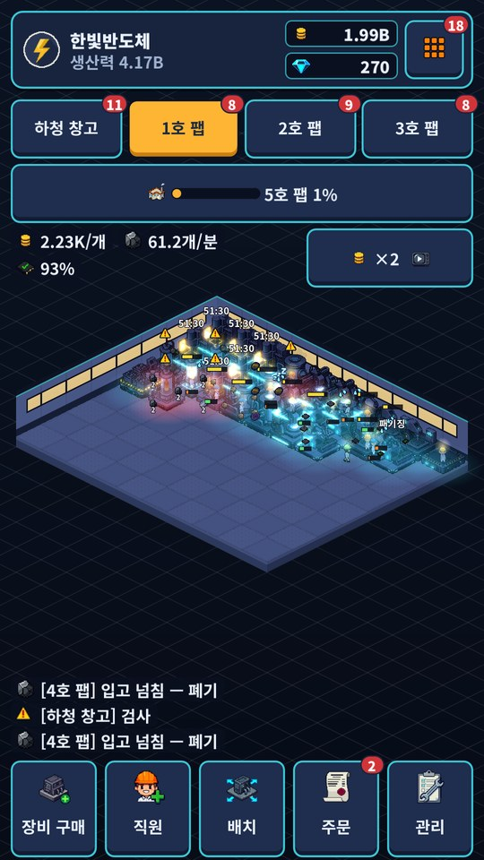
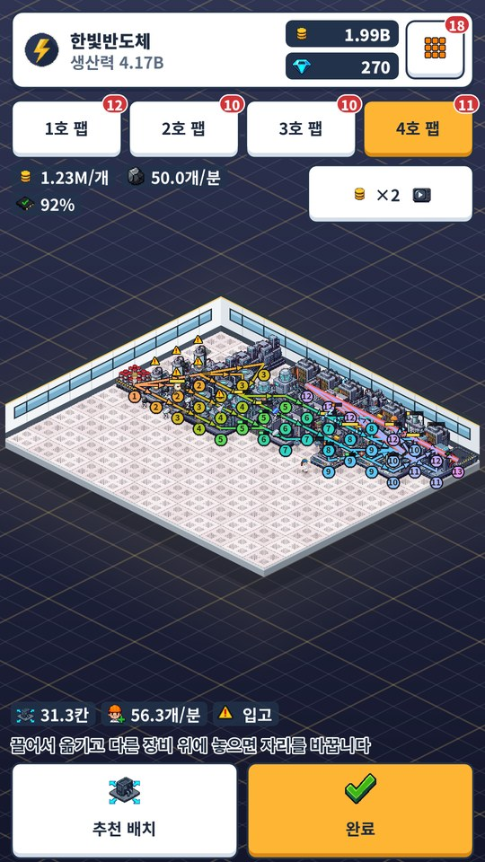
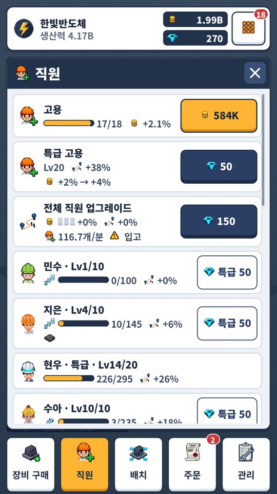
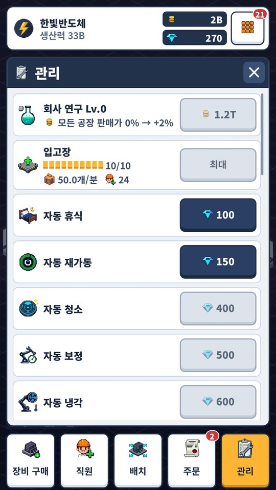
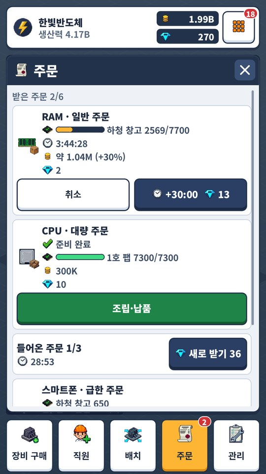
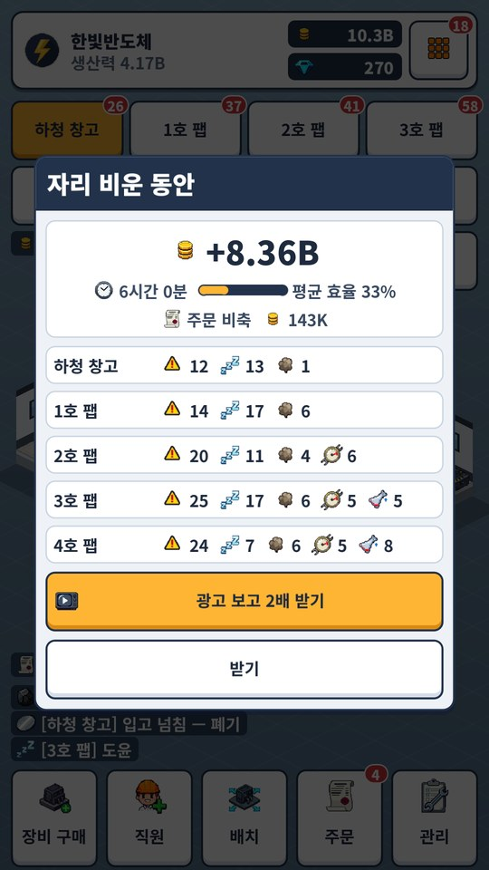

내 손으로 짓는 반도체 공장
장비를 놓고 직원을 뽑아 작은 하청 창고를 반도체 회사로 키우는 방치형 게임입니다.
반도체 키우기 후속작. 이번에는 공장 안을 직접 짓습니다. 장비를 어디에 놓느냐에 따라 직원이 걷는 길이 바뀌고, 생산량이 바뀝니다.
격자 위에 장비를 직접 놓습니다. 공정 사이가 멀면 직원이 오래 걷고, 가까우면 빨라집니다. 어디가 막히는지 보이니 배치를 고치거나 추천 배치를 받아 보세요.
장비 과부하, 졸음, 오염, 장비 틀어짐, 약품 부족. 눌러서 고치고, 손가락으로 쓸어 한꺼번에 고치고, 자동화를 들이면 알아서 고칩니다.
RAM, CPU부터 스마트폰, GPU, 서버, AI 칩, 자동차 칩, VR 헤드셋, 로봇까지. 1호 팹부터 5호 팹까지 공장마다 만드는 칩이 다릅니다.
앱을 닫아 두어도 최대 8시간까지 생산이 쌓이고, 돌아오면 그동안 번 돈을 정리해 보여 줍니다. 절전 모드로 화면을 어둡게 두고 계속 돌릴 수도 있습니다.
레벨이 오르는 직원과 특급 직원, 업적과 출석 보상, 가끔 날아오는 행운 드론. 낮과 밤에 따라 화면과 음악이 바뀝니다.
다른 회사와 공장의 힘을 겨룹니다. 백업 코드 하나로 새 폰에서 이어 할 수 있습니다.







